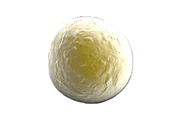
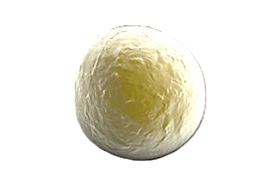

Descripción microbiológica
Micrococcus luteus es un coco grampositivo aerobio estricto, de 0.5-2 µm de diámetro, que se agrupa en tétradas o racimos irregulares. Presenta una pared celular gruesa con ácido teicoico y pigmentos carotenoides (principalmente luteína) que le confieren un color amarillo intenso. Catalasa-positivo y oxidasa-positivo, no esporulado y no móvil. Las colonias en agar nutritivo son convexas, lisas y amarillo brillante tras 24-48 horas a 37°C. Resiste condiciones de desecación y radiación UV gracias a su capacidad de reparación de ADN.
Características distintivas
- Tinción: Gram-positivo (tétradas), resistente a lisis por KOH al 3%.
- Metabolismo: Oxidativo estricto (no fermenta carbohidratos).
- Resistencias: Natural a la penicilina (por producción de β-lactamasa) y radiación UV.
- Pigmentos: Luteína (amarillo) y flexirrubina (rojo en cepas mutantes).
Ecología y transmisión
Habita en suelos, polvo doméstico, agua dulce/marina y superficies humanas (piel, mucosas). Forma parte de la microbiota cutánea transitoria (<5% de la flora normal). Se transmite por contacto directo con superficies contaminadas o aerosoles. Es considerado un patógeno oportunista en inmunodeprimidos (rara vez causa infecciones). Sobrevive meses en superficies secas gracias a su resistencia a la desecación.
Factores ambientales
- Supervivencia: Resiste meses en superficies secas y radiación UV (hasta 1000 J/m²).
- pH óptimo: 7.0-8.0, pero tolera rangos de 5.5-9.0.
- Temperatura: Mesófilo (25-37°C), pero algunas cepas crecen a 10°C.
Mecanismos de patogenicidad
Su baja patogenicidad se asocia a factores oportunistas:
| Factor | Mecanismo | Efecto clínico |
|---|---|---|
| Biofilm | Producción de matriz polisacárida | Adherencia a catéteres/protésis |
| β-lactamasa | Hidroliza penicilinas | Resistencia a antibióticos β-lactámicos |
Enfermedades clínicas (raras)
- Infecciones oportunistas: Bacteriemia asociada a catéteres, endocarditis (válvulas protésicas).
- Infecciones cutáneas: Celulitis en pacientes con neutropenia.
- Otras: Meningitis postquirúrgica, artritis séptica (casos reportados).
- Contaminante: Frecuente en cultivos de sangre (interpretar con precaución).
Diagnóstico y tratamiento
Métodos diagnósticos:
- Tinción de Gram (cocos grampositivos en tétradas) y cultivo (agar sangre/TSA).
- Pruebas bioquímicas: Oxidasa (+), catalasa (+), no fermenta glucosa.
- Diferenciación de Staphylococcus: Resistente a lisostafina, sensible a bacitracina.
Opciones terapéuticas:
- Primera línea: Vancomicina (1 g/12h IV) o daptomicina en infecciones graves.
- Alternativas: Tetraciclinas, aminoglucósidos (según antibiograma).
- Retiro de dispositivos: Esencial en infecciones asociadas a catéteres.
Prevención y control
- Desinfección: Limpieza de superficies con alcohol isopropílico al 70%.
- Vigilancia: Monitoreo en salas de hospitalización de alto riesgo (UCIs).
- Biocontrol: Uso potencial en biorremediación (degrada hidrocarburos).
Datos epidemiológicos
- Presente en el 30-50% de muestras de polvo doméstico (sin implicación clínica).
- Causa <1% de infecciones nosocomiales por grampositivos.
- Usado en biotecnología (producción de luteína y enzimas termoestables).